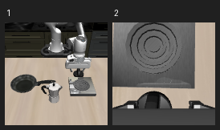
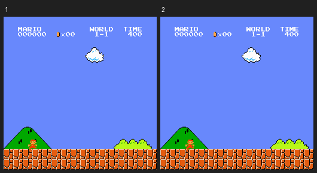
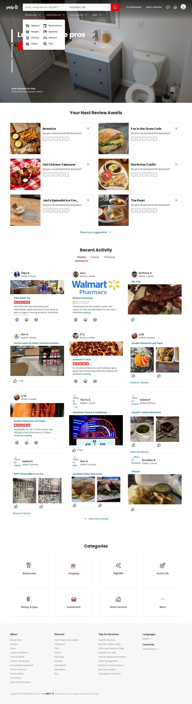
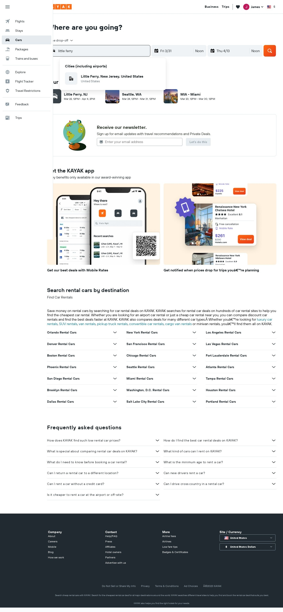
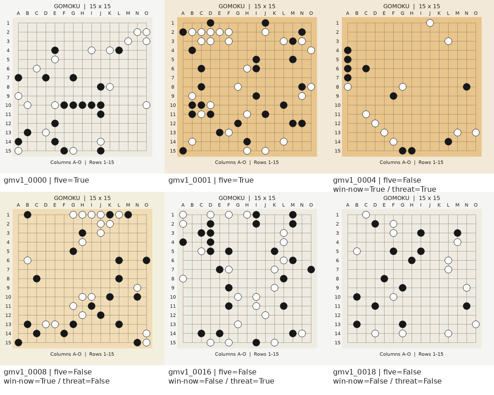

ROBOTICS已完成
LIBERO-10
10 个任务、250 个状态。判断末端运动方向与下一步夹爪命令。
35.6%OmniJev · 混合准确率
32.8%Qwen · 混合准确率
500 题 · 包含 Qwen 候选打分与文本生成两种配置；两种配置的答案完全一致。
查看逐题结果共 5 个场景

10 个任务、250 个状态。判断末端运动方向与下一步夹爪命令。
500 题 · 包含 Qwen 候选打分与文本生成两种配置；两种配置的答案完全一致。
查看逐题结果
200 个固定时点。预测下一条动作标注、跳跃、奔跑和动作保持。
800 题 · 两模型均低于 60.375% 的混合多数类基线；页面保留各题型统计。
查看预测回放
从 Mind2Web train 抽取 100 步，判断操作类型与候选页面元素。
195 题 · 100 道操作题、95 道元素题。元素选择使用包含正确元素的候选集。
查看网页操作记录
从 Mind2Web test_task 抽取 100 步，检查新任务中的操作与元素判断。
191 题 · 100 道操作题、91 道元素题；支持按标注操作类型筛选和比较。
查看网页操作记录
300 个合法合成棋盘。五连、棋子计数、一步获胜与阻挡等 7 类问题。
OmniJev 50.00% · Qwen3.5 40.37%；落点选择题的差距最大。
查看逐题选择结果没有匹配的场景，请修改筛选或搜索内容。
这些是固定协议下的自建对照实验，题目和输入在各场景内保持一致。各场景的题型与样本分布不同，首页百分比也对应不同指标，请进入场景查看完整协议、分题型成绩、标签分布和基线。
机器人与游戏评测预测已有轨迹标注；网页评测回放已有截图与候选元素。这里没有测试闭环任务成功率，也不能确认公开轨迹与模型训练数据完全分离。网页回放仅用于评测分析，与截图中各网站无隶属关系。